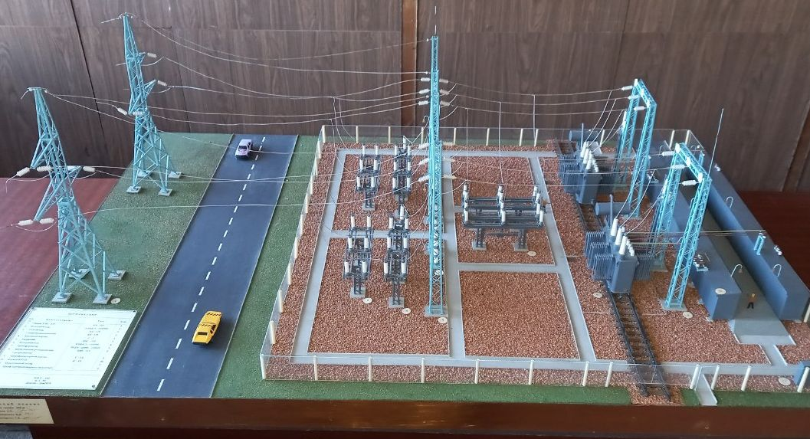

Главная страница

Кафедра создана в 1968 году.
Кафедра готовит инженеров по профессиональному направлению “Электроэнергетика и электротехника” (код 13.03.02) по профилю “Электроснабжение и энергосбережение”:
- бакалавров;
- магистров
Ежегодно принимается 50 студентов на дневную форму обучения; имеется также заочная форма обучения.
Кафедра выполняет научные работы в областях:
- электромагнитной совместимости и электросбережения;
- разработки методов оценки надежности и безопасности систем электроснабжения и прогнозирования аварий и катастроф на технологических объектах в период их проектирования и эксплуатации;
- проектирования систем электроснабжения промышленных предприятий.
Преподаватели кафедры проводят занятия по 26 дисциплинам.
На кафедре работают 12 преподавателей, в том числе 3 профессора, д-ра технических наук, 7 доцентов - канд. технических наук, 1 старший преподаватель, 1 ассистент - канд. технических наук